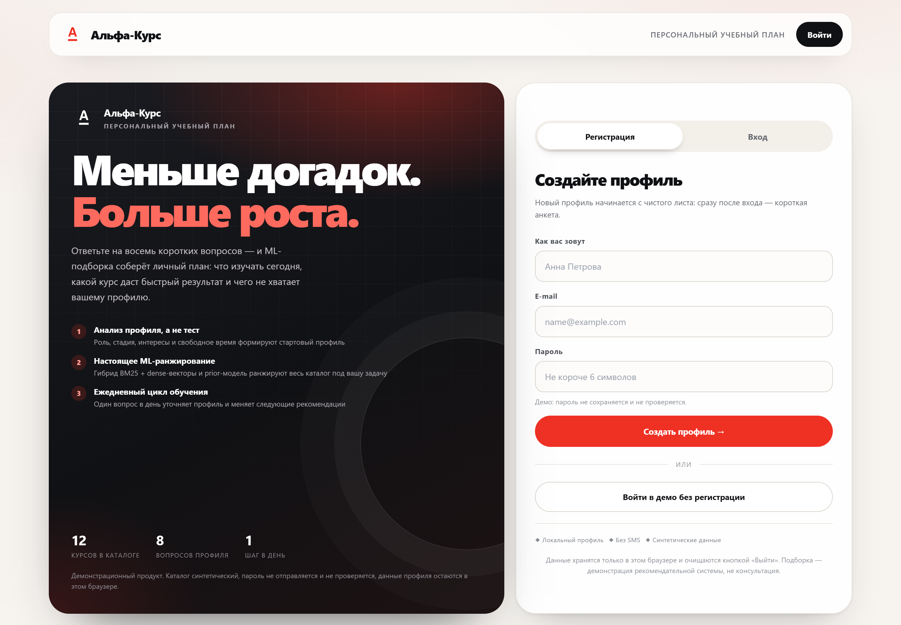

03
Вход и анкета
Шесть вопросов вместо длинной формы
Вход за один клик для демо. Дальше — пять вопросов с вариантами и один свободный:
задача, отрасль, стадия, опыт, главное ограничение и описание ситуации.

Вход: регистрация, вход и «Войти в демо без регистрации». Пароль не отправляется.

Анкета: прогресс, выбранные ответы и подсказка на каждом шаге.
Профиль хранится локально в браузере, поэтому демо работает без регистрации.
Регистрация в API — отдельный экран «Профиль» и единственная запись в продуктовую БД.
04
Дашборд
Задача, профиль и подборка — на одном экране

Заполненность профиля, ответы-чипы, фокус задачи, карточки из API и план на сегодня.
Карточки приходят из настоящего ML-конвейера, каталог при этом синтетический — об этом говорит подпись под подборкой.
05
Рекомендации
Каждая карточка объясняет, почему она здесь

Что в карточке
Тип материала, название, доступ, длительность, цена по каталогу
и короткое объяснение из prior-ранжирования.
Что внутри API
BM25 top-50 → признаки → prior → LinUCB → слэйт.
Ответ содержит decision_id, позиции и причины.
Честная граница
Ссылки ведут на демо-пути синтетического каталога.
Реальные материалы организатора не подключены.
Показы и клики записываются в events-БД с привязкой к решению. Это позволяет
проверять петлю обучения; CTR и конверсия на живых пользователях не измерялись.
06
Аналитика
Графики вместо сухих цифр — и честные пробелы

Что показывают графики
- NDCG@10 по четырём методам на шкале 0.82–0.86, чтобы разница была видна.
- Прирост к baseline TF-IDF: +0.0246 у BM25 + prior.
- Разрыв между TF-IDF и BM25 больше вклада prior.
Чего здесь нет
- CTR, просмотры и конверсия — «нет данных», а не ноль.
- Оценка на 21 задаче, один агентный разметчик.
- LinUCB против случайного на реальном трафике не проверялся.
Историческая синтетическая оценка retrieval из docs/quality_stage56.md.
Это не A/B-тест и не доказательство бизнес-эффекта.
07
Профиль
Лучшее совпадение — сразу в личном кабинете

Как выбирается «лучшее совпадение»
Задача и ответы анкеты → контекст запроса → BM25-кандидаты →
prior-ранжирование → LinUCB. Первая карточка ответа показывается
в профиле вместе с объяснением.
Почему это полезно
Пользователь не начинает с пустого каталога: он видит один конкретный
следующий шаг и может перейти ко всей подборке. Профиль остаётся
локальным, пока не включена регистрация.
Рекомендация — результат ранжирования, а не гарантия результата.
В демо материалы синтетические; названия и ссылки вымышлены.
08
Итог
Что можно проверить за пять минут
| Шаг | Действие | Что подтверждает |
|---|
| 1 | Открыть http://localhost:5173 и нажать «Войти в демо». | UI, роутинг, локальный профиль. |
| 2 | Ответить на шесть вопросов. | Анкета, прогресс, сохранение ответов. |
| 3 | Посмотреть дашборд и «Все рекомендации». | Карточки из BM25 + prior + LinUCB. |
| 4 | Открыть «Аналитику». | Графики исторической оценки и пробелы. |
| 5 | Открыть «Профиль». | Лучшее совпадение под задачу. |
2PostgreSQL базы
Продуктовая и изолированная events-база, отдельные миграции.
6синтетических материалов
26 публичных чанков, индекс BM25; генерируются при старте.
0измеренных бизнес-эффектов
Конверсия, продажи и uplift не заявляются.
git clone https://github.com/alihosseinabadi/alfa_bank
cp .env.example .env && docker compose up --build → http://localhost:5173
Что дальше
Подключить приватный каталог организатора и собрать индекс тем же
пайплайном. Затем — A/B-тест и измерение CTR/конверсии.
Документация
README.md · docs/submission-report.md · docs/quality_stage56.md ·
docs/recommendation-api-v1.md